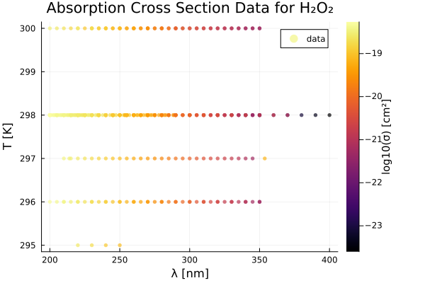
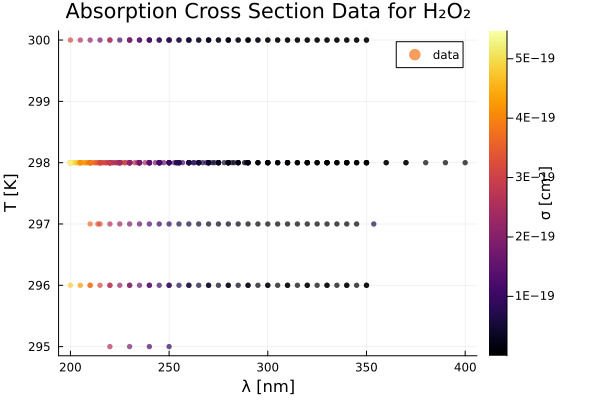
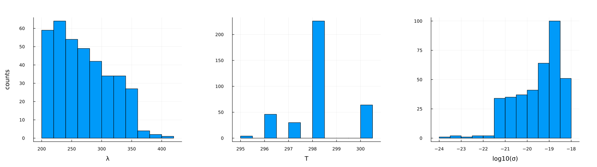
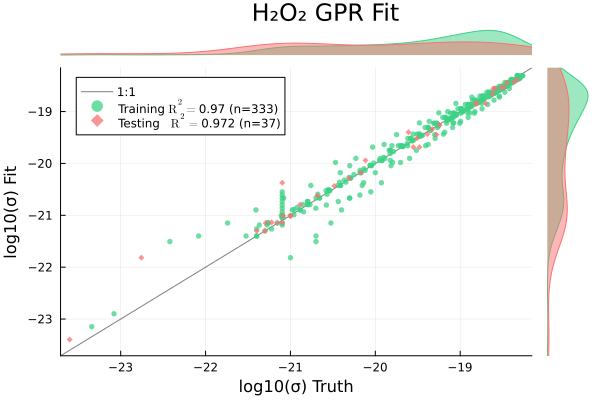
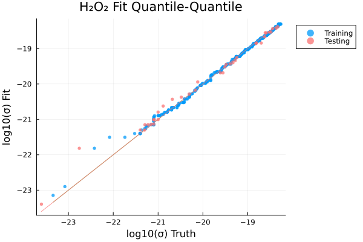
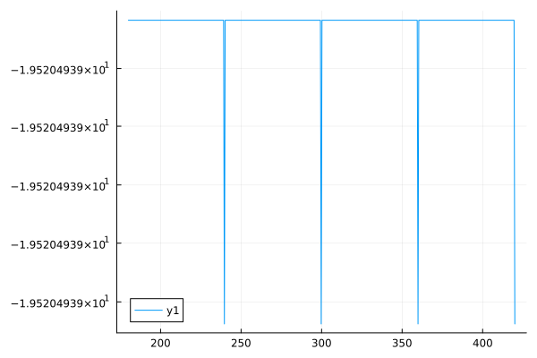
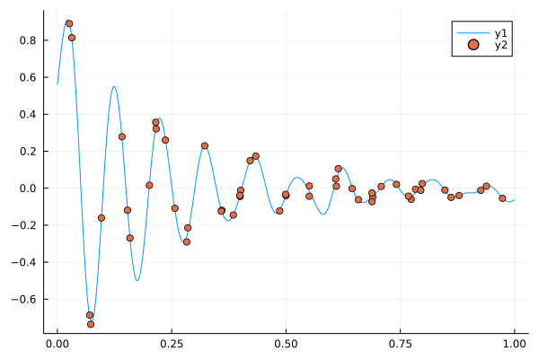
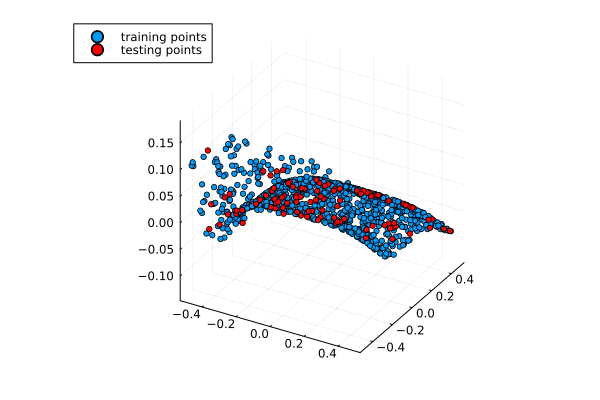
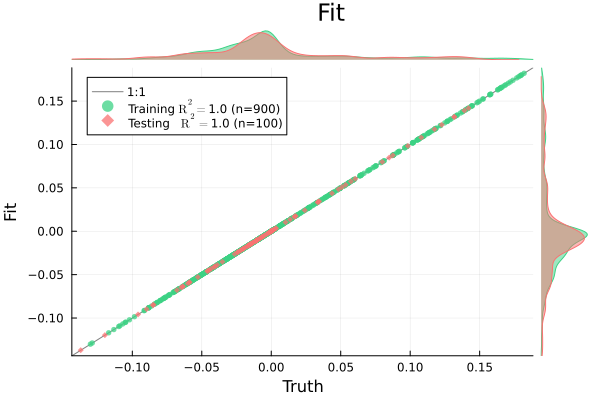

using Plots, MLPlotRecipes
using HDF5
using Tables
using MLJ, MLJGaussianProcesses\(\mathrm{H_2O_2}\)
h5_path = "../../data/photolysis_data.h5"
isfile(h5_path)trueread in the HDF5 file with our data and identify the cross section data we need:
h5 = h5open(h5_path, "r");cross_sections = h5["cross-sections"]
"H2O2" ∈ keys(cross_sections)
H2O2_data = cross_sections["H2O2"]📂 HDF5.Group: /cross-sections/H2O2 (file: ../../data/photolysis_data.h5)
├─ 🏷️ T1_units
├─ 🏷️ T2_units
├─ 🏷️ category
├─ 🏷️ formula
├─ 🏷️ sub-category
├─ 🏷️ Δσ_units
├─ 🏷️ λ_units
├─ 🏷️ σ_units
├─ 🔢 T1
├─ 🔢 T2
├─ 🔢 source_idx
├─ 📂 source_info
│ ├─ 📂 1
│ │ ├─ 🏷️ author(year)
│ │ ├─ 🏷️ comments
│ │ ├─ 🏷️ doi
│ │ └─ 🏷️ download_url
│ ├─ 📂 10
│ │ ├─ 🏷️ author(year)
│ │ ├─ 🏷️ comments
│ │ ├─ 🏷️ doi
│ │ └─ 🏷️ download_url
│ ├─ 📂 11
│ │ ├─ 🏷️ author(year)
│ │ ├─ 🏷️ comments
│ │ ├─ 🏷️ doi
│ │ └─ 🏷️ download_url
│ ├─ 📂 12
│ │ ├─ 🏷️ author(year)
│ │ ├─ 🏷️ comments
│ │ ├─ 🏷️ doi
│ │ └─ 🏷️ download_url
│ ├─ 📂 13
│ │ ├─ 🏷️ author(year)
│ │ ├─ 🏷️ comments
│ │ ├─ 🏷️ doi
│ │ └─ 🏷️ download_url
│ ├─ 📂 14
│ │ ├─ 🏷️ author(year)
│ │ ├─ 🏷️ comments
│ │ ├─ 🏷️ doi
│ │ └─ 🏷️ download_url
│ ├─ 📂 15
│ │ ├─ 🏷️ author(year)
│ │ ├─ 🏷️ comments
│ │ ├─ 🏷️ doi
│ │ └─ 🏷️ download_url
│ ├─ 📂 16
│ │ ├─ 🏷️ author(year)
│ │ ├─ 🏷️ comments
│ │ ├─ 🏷️ doi
│ │ └─ 🏷️ download_url
│ ├─ 📂 17
│ │ ├─ 🏷️ author(year)
│ │ ├─ 🏷️ comments
│ │ ├─ 🏷️ doi
│ │ └─ 🏷️ download_url
│ ├─ 📂 18
│ │ ├─ 🏷️ author(year)
│ │ ├─ 🏷️ comments
│ │ ├─ 🏷️ doi
│ │ └─ 🏷️ download_url
│ ├─ 📂 19
│ │ ├─ 🏷️ author(year)
│ │ ├─ 🏷️ comments
│ │ ├─ 🏷️ doi
│ │ └─ 🏷️ download_url
│ ├─ 📂 2
│ │ ├─ 🏷️ author(year)
│ │ ├─ 🏷️ comments
│ │ ├─ 🏷️ doi
│ │ └─ 🏷️ download_url
│ ├─ 📂 20
│ │ ├─ 🏷️ author(year)
│ │ ├─ 🏷️ comments
│ │ ├─ 🏷️ doi
│ │ └─ 🏷️ download_url
│ ├─ 📂 21
│ │ ├─ 🏷️ author(year)
│ │ ├─ 🏷️ comments
│ │ ├─ 🏷️ doi
│ │ └─ 🏷️ download_url
│ ├─ 📂 22
│ │ ├─ 🏷️ author(year)
│ │ ├─ 🏷️ comments
│ │ ├─ 🏷️ doi
│ │ └─ 🏷️ download_url
│ ├─ 📂 23
│ │ ├─ 🏷️ author(year)
│ │ ├─ 🏷️ comments
│ │ ├─ 🏷️ doi
│ │ └─ 🏷️ download_url
│ ├─ 📂 24
│ │ ├─ 🏷️ author(year)
│ │ ├─ 🏷️ comments
│ │ ├─ 🏷️ doi
│ │ └─ 🏷️ download_url
│ ├─ 📂 25
│ │ ├─ 🏷️ author(year)
│ │ ├─ 🏷️ comments
│ │ ├─ 🏷️ doi
│ │ └─ 🏷️ download_url
│ ├─ 📂 26
│ │ ├─ 🏷️ author(year)
│ │ ├─ 🏷️ comments
│ │ ├─ 🏷️ doi
│ │ └─ 🏷️ download_url
│ ├─ 📂 27
│ │ ├─ 🏷️ author(year)
│ │ ├─ 🏷️ comments
│ │ ├─ 🏷️ doi
│ │ └─ 🏷️ download_url
│ ├─ 📂 28
│ │ ├─ 🏷️ author(year)
│ │ ├─ 🏷️ comments
│ │ ├─ 🏷️ doi
│ │ └─ 🏷️ download_url
│ ├─ 📂 29
│ │ ├─ 🏷️ author(year)
│ │ ├─ 🏷️ comments
│ │ ├─ 🏷️ doi
│ │ └─ 🏷️ download_url
│ ├─ 📂 3
│ │ ├─ 🏷️ author(year)
│ │ ├─ 🏷️ comments
│ │ ├─ 🏷️ doi
│ │ └─ 🏷️ download_url
│ ├─ 📂 30
│ │ ├─ 🏷️ author(year)
│ │ ├─ 🏷️ comments
│ │ ├─ 🏷️ doi
│ │ └─ 🏷️ download_url
│ ├─ 📂 4
│ │ ├─ 🏷️ author(year)
│ │ ├─ 🏷️ comments
│ │ ├─ 🏷️ doi
│ │ └─ 🏷️ download_url
│ └─ (5 more children)
├─ 🔢 Δσ
├─ 🔢 λ
└─ 🔢 σλs = read(H2O2_data, "λ")
σs = read(H2O2_data, "σ")
T1s = read(H2O2_data, "T1")
T2s = read(H2O2_data, "T2")
source_idx = read(H2O2_data, "source_idx")
T_units = read_attribute(H2O2_data, "T1_units")
category= read_attribute(H2O2_data, "category")
formula= read_attribute(H2O2_data, "formula")
λ_units = read_attribute(H2O2_data, "λ_units")
σ_units = read_attribute(H2O2_data, "σ_units")
println(T_units)
println(category)
println(formula)
println(λ_units)
println(σ_units)
close(h5)K
Peroxides
H2O2
nm
cm^2println(size(λs))
println(size(T1s))
println(size(σs))(1164,)
(30,)
(1164,)using DataFramesfunction generate_data_table(λs, σs, T1s, T2s, source_idx; σ_lb=1e-25, σ_ub=1.0, T_lb=290.0, T_ub=305.0, λ_lb=200.0, λ_ub=1100.0)
Tout = [T1s[source_idx[i]] for i ∈ 1:size(source_idx, 1)]
# we want T2 to be NaN
idx = [ i for i ∈ 1:size(source_idx,1) if isnan(T2s[source_idx[i]])]
λout = λs[idx]
σout = σs[idx]
Tout = Tout[idx]
source_out = source_idx[idx]
# we want T between T_lb and T_ub
idx2 = [i for i ∈ 1:size(λout,1) if (T_lb ≤ Tout[i] && Tout[i] ≤ T_ub)]
λout = λout[idx2]
σout = σout[idx2]
Tout = Tout[idx2]
source_out = source_out[idx2]
# we want σ to not be NaN and greater than 0.
idx3 = [i for i ∈ 1:size(σout,1) if !isnan(σout[i]) && (σout[i] > σ_lb) && (σout[i] ≤ σ_ub)]
λout = λout[idx3]
σout = σout[idx3]
Tout = Tout[idx3]
source_out = source_out[idx3]
# we want λ to be between λ_lb and λ_ub
idx4 = [i for i ∈ 1:size(λout,1) if (λ_lb ≤ λout[i] && λout[i] ≤ λ_ub)]
λout = λout[idx4]
σout = σout[idx4]
Tout = Tout[idx4]
source_out = source_out[idx4]
# idxs = [i for i ∈ 1:size(source_idx, 1) if (T_lb < Temps[i] && Temps[i] < T_ub) && (!isnan(σs[i])) && (σs[i] ≥ 0.0) && (λ_lb ≤ λs[i] && λs[i] ≤ λ_ub) && isnan(T2s[source_idx[i]])]
# 5. Create table with data containing the good values
#data_table = Tables.columntable((; λ=λout, σ=σout, T=Tout, source_id=source_out))
df = DataFrame(λ=λout, σ=σout, T=Tout, source_id=source_out)
return df
end
df = generate_data_table(λs, σs, T1s, T2s, source_idx)
println(nrow(df))
describe(df)3704×7 DataFrame
| Row | variable | mean | min | median | max | nmissing | eltype |
|---|---|---|---|---|---|---|---|
| Symbol | Float64 | Real | Float64 | Real | Int64 | DataType | |
| 1 | λ | 267.227 | 200.0 | 260.0 | 400.0 | 0 | Float64 |
| 2 | σ | 1.24797e-19 | 2.5e-24 | 5.565e-20 | 5.47e-19 | 0 | Float64 |
| 3 | T | 297.984 | 295.0 | 298.0 | 300.0 | 0 | Float64 |
| 4 | source_id | 12.3324 | 1 | 11.0 | 29 | 0 | Int64 |
p = scatter(
df.λ,
df.T,
zcolor=log10.(df.σ),
ms=3,
msw=0,
xlabel="λ [$(λ_units)]",
ylabel="T [$(T_units)]",
label="data",
alpha=0.7,
rightmargin=10Plots.mm,
colorbar_title="log10(σ) [cm²]",
title="Absorption Cross Section Data for H₂O₂",
)
p = scatter(
df.λ,
df.T,
zcolor=df.σ,
ms=3,
msw=0,
xlabel="λ [$(λ_units)]",
ylabel="T [$(T_units)]",
label="data",
alpha=0.7,
rightmargin=10Plots.mm,
colorbar_title="σ [cm²]",
title="Absorption Cross Section Data for H₂O₂",
)
p1 = histogram(df.λ, xlabel="λ", ylabel="counts", label="", margin=10Plots.mm)
p2 = histogram(df.T, xlabel="T", label="", margin=10Plots.mm)
p3 = histogram(log10.(df.σ), xlabel="log10(σ)", label="", margin=10Plots.mm)
#p3 = histogram(df.σ, xlabel="σ", ylabel="counts")
phist = plot(p1, p2, p3, layout=(1,3), size=(1600, 450))
We can now thik of this as providing our training data. The goal is to learn a function \(f:(\lambda, T) \mapsto \sigma\). Our model of choice will be to use a gaussian process.
First let’s split up the data into training and testing pairs.
Important
We should think carefully about how to do this. The most important information is probably in regions where there is rapid changes. We can also examine fitting \(\log(\sigma)\) if \(\sigma\) alone is to sharply peaked…
n = nrow(df)
train_frac = 0.1
idxs = shuffle(1:n)
ntrain = round(Int, (1.0 - train_frac)*n)
idx_train = idxs[1:ntrain]
idx_test = idxs[ntrain+1:end]
df_train = df[idx_train, :]
df_test = df[idx_test, :]37×4 DataFrame
12 rows omitted
| Row | λ | σ | T | source_id |
|---|---|---|---|---|
| Float64 | Float64 | Float64 | Int64 | |
| 1 | 220.0 | 2.58e-19 | 298.0 | 6 |
| 2 | 335.0 | 1.0e-21 | 298.0 | 8 |
| 3 | 340.0 | 8.2e-22 | 297.0 | 28 |
| 4 | 255.0 | 2.46e-20 | 300.0 | 7 |
| 5 | 235.0 | 1.56e-19 | 297.0 | 28 |
| 6 | 220.0 | 2.45e-19 | 298.0 | 13 |
| 7 | 345.0 | 5.0e-22 | 298.0 | 8 |
| 8 | 330.0 | 1.3e-21 | 296.0 | 11 |
| 9 | 340.0 | 8.0e-22 | 300.0 | 7 |
| 10 | 204.0 | 4.69e-19 | 298.0 | 4 |
| 11 | 260.0 | 5.7e-20 | 296.0 | 12 |
| 12 | 325.0 | 2.08e-21 | 297.0 | 28 |
| 13 | 345.0 | 5.1e-22 | 300.0 | 15 |
| ⋮ | ⋮ | ⋮ | ⋮ | ⋮ |
| 26 | 245.56 | 1.53e-19 | 298.0 | 2 |
| 27 | 207.0 | 4.3e-19 | 298.0 | 4 |
| 28 | 340.0 | 7.0e-22 | 298.0 | 8 |
| 29 | 290.0 | 7.66e-21 | 298.0 | 22 |
| 30 | 315.0 | 3.29e-21 | 297.0 | 28 |
| 31 | 270.0 | 3.31e-20 | 300.0 | 15 |
| 32 | 345.0 | 4.0e-22 | 298.0 | 13 |
| 33 | 277.94 | 4.68e-20 | 298.0 | 2 |
| 34 | 340.0 | 1.0e-21 | 296.0 | 12 |
| 35 | 370.0 | 1.75e-23 | 298.0 | 22 |
| 36 | 345.0 | 6.0e-22 | 296.0 | 11 |
| 37 | 218.0 | 3.04e-19 | 298.0 | 4 |
Xtrain = df_train[!, [:λ, :T]];
ytrain = log10.(df_train[!, :σ]);
Xtest = df_test[!, [:λ, :T]];
ytest = log10.(df_test[!, :σ]);using Pkg
Pkg.add("ParameterHandling") Resolving package versions...
Updating `~/gitrepos/ActivePure/Photolysis.jl/mcm/Project.toml`
[2412ca09] + ParameterHandling v0.4.6
No Changes to `~/gitrepos/ActivePure/Photolysis.jl/mcm/Manifest.toml`using KernelFunctions
using ParameterHandling
kernel(θ) = θ.σ₁²*(SqExponentialKernel() ∘ ScaleTransform(1/(2(θ.ℓ₁)^2))) + θ.σ₂²*(Matern32Kernel() ∘ ScaleTransform(1/(2(θ.ℓ₂)^2)))
θ_init = (;σ₁²=positive(0.1), ℓ₁=positive(0.1), σ₂²=positive(0.1), ℓ₂=positive(0.1),)
gpr = GPR(
k = kernel,
θ_init = θ_init,
σ²=1e-7
)
# mach = machine(gpr, Xtrain, ytrain) |> fit!
mach = machine(gpr, df[!, [:λ, :T]], log10.(df.σ)) |> fit![ Info: Training machine(GPR(μ = 0.0, …), …).Iter Function value Gradient norm
0 5.520506e+07 4.683357e+07
* time: 0.00015687942504882812
1 8.397008e+04 1.850000e+02
* time: 0.1980438232421875
2 2.910224e+03 8.683632e+06
* time: 0.7028379440307617
3 2.339622e+03 2.052704e+13
* time: 2.0466439723968506
4 2.284220e+03 1.830463e+02
* time: 2.2037007808685303
5 1.831759e+03 1.594123e+02
* time: 2.2866809368133545
6 1.672186e+03 1.028704e+02
* time: 2.4727489948272705
7 1.640279e+03 6.596509e+01
* time: 2.5251169204711914
8 1.624784e+03 8.922078e+00
* time: 2.5702309608459473
9 1.624559e+03 3.020414e-01
* time: 2.632138967514038
10 1.624521e+03 4.003218e+00
* time: 2.754595994949341
11 1.559835e+03 1.059581e+02
* time: 2.8942248821258545
12 1.558517e+03 1.021434e+02
* time: 3.015133857727051
13 1.312760e+03 9.561306e+01
* time: 3.1111948490142822
14 9.228737e+02 6.320437e+01
* time: 3.2740349769592285
15 8.885289e+02 3.601162e+01
* time: 3.3891518115997314
16 8.389134e+02 1.604713e+01
* time: 3.4401509761810303
17 8.335698e+02 3.855661e+00
* time: 3.5000698566436768
18 8.334245e+02 3.626831e-02
* time: 3.545395851135254
19 8.334245e+02 1.353522e-02
* time: 3.5983259677886963
20 4.889816e+02 9.798242e+01
* time: 3.8875157833099365
21 4.871506e+02 9.687293e+01
* time: 3.931220769882202
22 3.474097e+02 5.279476e+01
* time: 4.0060179233551025
23 3.246644e+02 2.937024e+01
* time: 4.04784083366394
24 3.151731e+02 5.276264e+00
* time: 4.09749698638916
25 3.150298e+02 1.377514e+00
* time: 4.1406848430633545
26 3.150150e+02 2.884675e-01
* time: 4.1958818435668945
27 3.149679e+02 1.472008e+00
* time: 4.3132407665252686
28 3.149543e+02 4.499126e-02
* time: 4.394497871398926
29 3.149542e+02 3.037940e-03
* time: 4.472301959991455
30 3.149542e+02 2.376821e-05
* time: 4.53503680229187
31 3.149542e+02 8.836690e-08
* time: 4.6040449142456055
32 3.149542e+02 3.455128e-08
* time: 4.6613547801971436
33 3.149542e+02 3.873630e-09
* time: 4.705882787704468trained Machine; caches model-specific representations of data
model: GPR(μ = 0.0, …)
args:
1: Source @412 ⏎ Table{AbstractVector{Continuous}}
2: Source @762 ⏎ AbstractVector{Continuous}rpt = report(mach)(summary = "L-BFGS",
minimizer = [0.08517875349265944, -1.2829398398521916e11, 5.942946238151963, 40.71001341650538, -2.8475008475089973],
minimum = 314.9541966975367,
iterations = 33,
converged = true,)y_pred_train = predict_mean(mach, Xtrain)
y_pred_test = predict_mean(mach, Xtest)
py_train = predict(mach, Xtrain)
py_test = predict(mach, Xtest)
py_train[1]Distributions.Normal{Float64}(μ=-21.399818476559005, σ=0.10712744012232024)scatterresult(
ytrain, y_pred_train,
ytest, y_pred_test,
xlabel="log10(σ) Truth",
ylabel="log10(σ) Fit",
plot_title="H₂O₂ GPR Fit"
)
quantilequantile(
ytrain, y_pred_train,
ytest, y_pred_test,
xlabel="log10(σ) Truth",
ylabel="log10(σ) Fit",
title="H₂O₂ Fit Quantile-Quantile"
)
Now let’s plot the resulting function on a grid:
λ₁ = minimum(df.λ)
λ₂ = maximum(df.λ)
T₁ = minimum(df.T)
T₂ = maximum(df.T)
Δλ = λ₂ - λ₁
ΔT = T₂ - T₁
fudge_fac = 0.1
λ₁ = λ₁ - fudge_fac*Δλ
λ₂ = λ₂ + fudge_fac*Δλ
T₁ = T₁ - fudge_fac*ΔT
T₂ = T₂ + fudge_fac*ΔT
λs = range(λ₁, λ₂, length=200)
Ts = range(T₁, T₂, length=50)
# resulting shape should be reshaped to 500 by 50
λ_grid = [λ for λ∈λs, T∈Ts]
T_grid = [T for λ∈λs, T∈Ts]
df_grid = DataFrame(λ=vcat(λ_grid...), T=vcat(T_grid...))
σ_grid = reshape(predict_mean(mach, df_grid),(200,50))
heatmap(λs, Ts, σ_grid)
scatter!(
df.λ,
df.T,
zcolor=log10.(df.σ),
ms=4,
label="data",
rightmargin=10Plots.mm,
colorbar_title="σ [cm²]",
)298.0λs = range(λ₁, λ₂, length=500)
Ts = [298.0 for _ ∈ 1:500]
df_pred = DataFrame(λ=λs, T=Ts)
σ_preds = predict_mean(mach, df_pred)
plot(λs, σ_preds)
function make_training_data(n, ν)
xs = reshape(collect(range(0.0, stop=1.0, length=500)), (1,500))
y(x) = (exp(-x/(0.5)^2) * sin(2π*ν*x)) + (0.3)^2*(rand()-0.5)
ytruth(x) = exp(-x/(0.5)^2) * sin(2π*ν*x)
X = Tables.table(rand(1,n)', header=[:x])
Xtrue = Tables.table(xs', header=[:x])
y = y.(X.x)
ytrue = ytruth.(Xtrue.x)
return X, y, Xtrue, ytrue
end
X, y, Xtrue, ytrue = make_training_data(50, 10)(Tables.MatrixTable{LinearAlgebra.Adjoint{Float64, Matrix{Float64}}} with 50 rows, 1 columns, and schema:
:x Float64, [-0.11910037399566864, 0.01220942201251572, -0.010091656163291975, 0.02066646335009669, -0.011549536452583477, 0.8137673436519305, -0.039571239673889064, -0.011172731423395085, -0.144878198731118, -0.12315261399469685 … -0.033534805230887144, 0.14887469603148903, 0.890109273286779, -0.04974330747314241, 0.2781718602943487, -0.042666066500645396, -0.12454136396033408, -0.06221610591174015, 0.1735472693012275, 0.0501742130486802], Tables.MatrixTable{LinearAlgebra.Adjoint{Float64, Matrix{Float64}}} with 500 rows, 1 columns, and schema:
:x Float64, [0.0, 0.12458042096548765, 0.24521471376453977, 0.3600631014574817, 0.46740631751315176, 0.5656708039301793, 0.6534512106157103, 0.7295298841027695, 0.7928930861297541, 0.8427437383060459 … -0.017831231548023147, -0.016509647442768692, -0.01494870660243864, -0.013176833587402128, -0.011225327522356849, -0.009127822756544184, -0.006919721272661151, -0.004637606245326371, -0.002318646297738392, -4.4860377078854197e-17])kernel(θ) = θ.σ₁²*(SqExponentialKernel() ∘ ScaleTransform(1/(2(θ.ℓ₁)^2))) + θ.σ₂²*(Matern32Kernel() ∘ ScaleTransform(1/(2(θ.ℓ₂)^2)))
θ_init = (;σ₁²=positive(0.1), ℓ₁=positive(0.1), σ₂²=positive(0.1), ℓ₂=positive(0.1),)
gpr = GPR(
k = kernel,
θ_init = θ_init,
σ²=1e-7
)
# mach = machine(gpr, Xtrain, ytrain) |> fit!
mach = machine(gpr, X, y) |> fit![ Info: Training machine(GPR(μ = 0.0, …), …).Iter Function value Gradient norm
0 6.176849e+02 3.294959e+03
* time: 0.0001609325408935547
1 4.245610e+02 2.500000e+01
* time: 0.01802802085876465
2 1.536238e-01 9.276824e+00
* time: 0.023598909378051758
3 -1.838432e+00 1.642444e+01
* time: 0.028696060180664062
4 -2.222085e+00 3.646697e+00
* time: 0.031058073043823242
5 -2.409770e+00 1.895024e+00
* time: 0.03342390060424805
6 -2.424902e+00 4.591384e-02
* time: 0.03683209419250488
7 -2.424945e+00 6.948281e-03
* time: 0.04055190086364746
8 -2.424955e+00 4.642882e-02
* time: 0.04716300964355469
9 -3.911795e+00 1.691929e+01
* time: 0.06146502494812012
10 -3.911854e+00 1.693188e+01
* time: 0.06484293937683105
11 -2.544498e+01 1.811944e+01
* time: 0.07523202896118164
12 -2.773278e+01 1.382678e+01
* time: 0.08808112144470215
13 -3.026212e+01 4.678491e+00
* time: 0.09667491912841797
14 -3.213040e+01 5.934352e+00
* time: 0.09993100166320801
15 -3.418021e+01 5.000502e+00
* time: 0.10272097587585449
16 -3.484923e+01 1.268289e+01
* time: 0.10554909706115723
17 -3.518251e+01 4.125281e+00
* time: 0.10827898979187012
18 -3.540297e+01 2.758169e-01
* time: 0.11300206184387207
19 -3.540563e+01 1.548509e-01
* time: 0.11755704879760742
20 -3.540565e+01 1.663166e-03
* time: 0.12055611610412598
21 -3.540565e+01 9.652292e-06
* time: 0.12480306625366211
22 -3.540565e+01 5.053648e-08
* time: 0.12941789627075195
23 -3.540565e+01 6.864558e-11
* time: 0.1333160400390625trained Machine; caches model-specific representations of data
model: GPR(μ = 0.0, …)
args:
1: Source @492 ⏎ Table{AbstractVector{Continuous}}
2: Source @084 ⏎ AbstractVector{Continuous}y_pred = predict_mean(mach, Xtrue)500-element Vector{Float64}:
0.5608180743428964
0.6071206663803306
0.6529973819201168
0.6977092492488189
0.7404547349060291
0.7803823497474104
0.8166060889345779
0.8482234990255315
0.8743360494648164
0.8940713721610013
0.9066068265312588
0.9111937534571365
0.9071817048894731
⋮
-0.06438038355570742
-0.06776164321695946
-0.07041055912915144
-0.0723032111728047
-0.07343523548509083
-0.07382060128312681
-0.07348987474542858
-0.07248807840635572
-0.0708722612638966
-0.06870889576551893
-0.06607121353515381
-0.0630365828885893plot(Xtrue.x, y_pred)
scatter!(X.x, y)
n=1000
xs = (rand(n,2) .- 0.5)
x₁ = xs[:,1]
x₂ = xs[:,2]
y = x₁.^5 .+ x₂.^4 .- x₁.^4 .- x₂.^3
Xtrain = Tables.table(xs[1:Int(0.9*n), :], header=[:x₁, :x₂])
Xtest = Tables.table(xs[Int(0.9*n)+1:end, :], header=[:x₁, :x₂])
ytrain = y[1:Int(0.9*n)]
ytest = y[Int(0.9*n)+1:end]
scatter(Xtrain.x₁, Xtrain.x₂, ytrain, ms=3, label="training points")
scatter!(Xtest.x₁, Xtest.x₂, ytest, color=:red, ms=3, label="testing points")
kernel(θ) = θ.σ₁²*(SqExponentialKernel() ∘ ScaleTransform(1/(2(θ.ℓ₁)^2))) + θ.σ₂²*(Matern32Kernel() ∘ ScaleTransform(1/(2(θ.ℓ₂)^2)))
θ_init = (;σ₁²=positive(0.1), ℓ₁=positive(0.1), σ₂²=positive(0.1), ℓ₂=positive(0.1),)
gpr = GPR(
k = kernel,
θ_init = θ_init,
# σ²=1e-7
)
# mach = machine(gpr, Xtrain, ytrain) |> fit!
mach = machine(gpr, Xtrain, ytrain) |> fit![ Info: Training machine(GPR(μ = 0.0, …), …).Iter Function value Gradient norm
0 -1.670727e+02 5.199854e+02
* time: 0.00019097328186035156
1 -4.734137e+03 1.503170e+03
* time: 4.420762062072754
2 -4.840642e+03 9.308025e+02
* time: 5.104015111923218
3 -5.098898e+03 8.038598e+02
* time: 5.796343088150024
4 -5.346684e+03 3.970594e+02
* time: 6.482567071914673
5 -5.896281e+03 1.717814e+03
* time: 7.4011549949646
6 -6.727720e+03 9.644671e+02
* time: 8.08535099029541
7 -6.864112e+03 4.600626e+01
* time: 8.542866945266724
8 -6.886448e+03 4.059468e+02
* time: 9.247071981430054
9 -6.898714e+03 7.109971e+01
* time: 9.94740605354309
10 -6.906918e+03 2.015111e+02
* time: 10.866995096206665
11 -6.913086e+03 1.368285e+02
* time: 11.548546075820923
12 -6.950506e+03 2.913849e+02
* time: 12.473842144012451
13 -7.001777e+03 4.041452e+02
* time: 13.156044960021973
14 -7.046138e+03 1.589057e+02
* time: 13.838634014129639
15 -7.050020e+03 3.377373e+01
* time: 14.578689098358154
16 -7.050116e+03 1.424288e+01
* time: 15.060181140899658
17 -7.050119e+03 8.910666e-01
* time: 16.643229007720947
18 -7.050112e+03 8.341030e-01
* time: 20.30194902420044
19 -7.050112e+03 1.179394e+00
* time: 26.873029947280884
20 -7.050107e+03 2.248200e-01
* time: 27.352442979812622
21 -7.050115e+03 1.044133e+00
* time: 27.810850143432617
22 -7.050117e+03 4.746199e-01
* time: 32.38437104225159
23 -7.050121e+03 8.571094e-01
* time: 34.8969349861145
24 -7.050125e+03 2.832218e-01
* time: 36.723212003707886trained Machine; caches model-specific representations of data
model: GPR(μ = 0.0, …)
args:
1: Source @728 ⏎ Table{AbstractVector{Continuous}}
2: Source @679 ⏎ AbstractVector{Continuous}y_pred_train = predict_mean(mach, Xtrain)
y_pred_test = predict_mean(mach, Xtest)100-element Vector{Float64}:
-2.8878450393676758e-5
0.0344734862446785
0.09831034205853939
-0.01759042777121067
-0.06359002739191055
-0.01516430452466011
0.0030932649970054626
-0.0002354402095079422
-0.014944754540920258
-0.05883212573826313
-0.08973219990730286
-0.00040311552584171295
-0.01130409725010395
⋮
-1.8864870071411133e-5
0.0848623551428318
-0.014372158795595169
0.001810908317565918
-0.017009228467941284
-0.0011161155998706818
-0.03888287954032421
-0.020225761458277702
0.0007748045027256012
0.0014734435826539993
-0.04117823205888271
0.07993144396459684scatterresult(
ytrain, y_pred_train,
ytest, y_pred_test,
xlabel="Truth",
ylabel="Fit",
plot_title="Fit"
)
Okay, so this confirms that my GPR algorithm